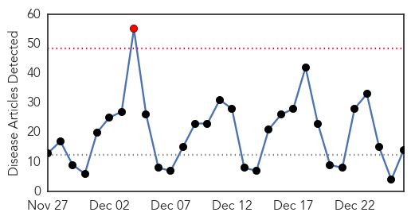
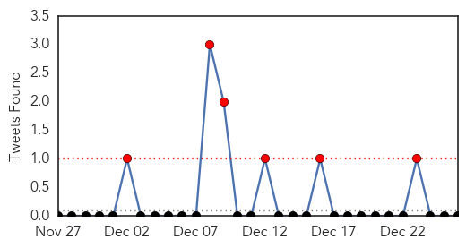
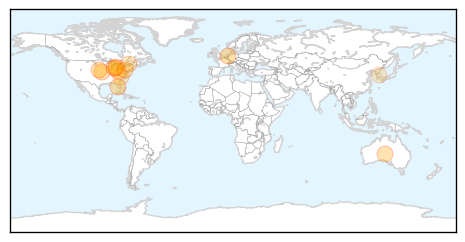
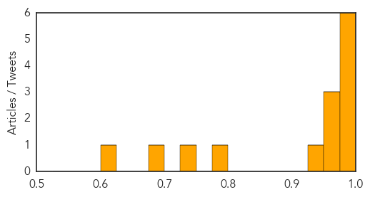

Toggle navigation
Early Warning
Daily Alerts
Influenza
Dec 26, 2014
Compare to:
-
Dengue Fever
Hemmorhagic Fever
Mold/Fungal Infection
Meningitis
Pertussis / Whooping Cough
Middle East Respiratory Syndrome
Cholera
Hepatitis
Chikungunya
Yellow Fever
Bubonic Plague
West Nile Virus
Swine Flu
Ebola
Measles
Unknown
Mumps
30 Day Trends
Web: 1
alerts
, 0
warnings
Twitter: 6
alerts
, 0
warnings
Top Articles:
0.998
Flu widespread across Ohio
0.996
Flu season hitting fast, hard
0.995
Serious flu strain sweeping through Jackson County, more than 1,000 cases in December
0.993
Flu numbers rising in Lee, declining in Collier â for now
0.993
Hundreds of flu cases reported in Lehigh Valley; officials say virus is widespread statewide
0.986
Deadly new “Bourbon virus” doesn't come from whiskey
0.972
NIH Resumes MERS Flu Studies
0.966
Flu Protection Measures
0.950
Frail Seniors Fare Better with High-Dose Flu Vaccine
0.935
How To Figure Out If You Have A Cold, A Flu, Or Allergies
0.785
Get Added Protection Against H3N2 with A.Vogel's Clinically Proven Echinaforce® - News Press Release
0.741
Hospital Visitor Restrictions
0.692
State Continues Stressing Flu Shots
0.618
Washington steps up testing for bird flu in the wild
Top Tweets:
No tweets found for Dec 26, 2014
Web/News Articles

Tweets

Article Locations

Article Confidences
